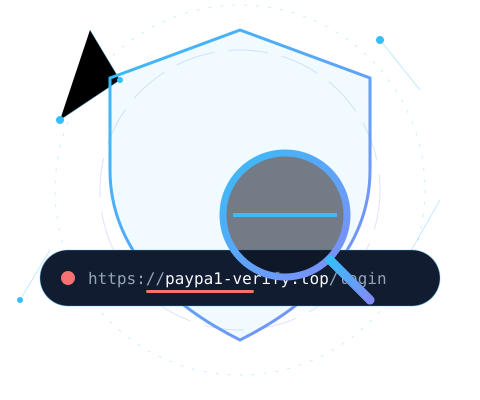

Risk assessment
0/ 100
Awaiting scan
Run an inspection to see the risk assessment.
Confidence: heuristic, explainable
Uncover suspicious URL patterns, understand hidden warning signs, and make smarter decisions before you click.

Stored in this browser only. Nothing is uploaded.
Every signal is visible, explainable and deliberately limited.
The text is normalized and split into protocol, hostname, port, path and query.
Local rules look for user-info tricks, raw IPs, punycode, shorteners, lookalike wording and more.
Each triggered rule adds its weight. The total is capped at 100.
Every signal shows why it matters. The score prioritizes attention; it is not a verdict.
These checks need a hardened backend with SSRF protections.